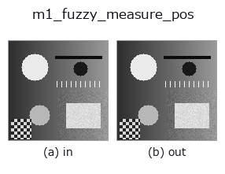

measure1d op• Data kinds: image → contour
• Call: fullseye.apply(img, "m1_fuzzy_measure_pos", a=0.5, b=0.5) (the 2-D model is one image plus two scalar knobs a,b∈[0,1])
• HALCON equivalent: fuzzy_measure_pos (the HALCON reference is a useful guide to its meaning and parameters)

*The figure is the actual output on a synthetic 128×128 input. Left: input, right: output. Point clouds are drawn as a top-down scatter (brightness = z), 1-D series as a line plot, volumes as the maximum-intensity projection along z, videos as the middle frame, complex images as magnitude; return values that are not pictures are shown as the values themselves.*
Sweeping knob a (0.1 / 0.5 / 0.9, the other knob at its default):
▸ m1_fuzzy_measure_pos: knob a sweep (docs site)
*Knob b does not change the output (measured: identical at 0.1 / 0.5 / 0.9).*
On other images (synthetic scene / photo / coins. Top row: inputs, bottom row: their outputs. Knobs at default):
▸ m1_fuzzy_measure_pos: other inputs (docs site)
*The 4th column is a colour (H,W,3) input. This op handles colour without crossing channels (it does not convolve the colour channel as a third spatial axis).*
Sieves edges along a caliper line through the centre by a fuzzy membership score and returns them (equivalent to HALCON `fuzzy_measure_pos`: detects straight edges perpendicular to a rectangle/arc using fuzzy judgement).
> The detailed description below is the original text — the summary and the headings are translated.
エッジ検出は `m1_measure_pos と同じ。各エッジの振幅を(amp - lo) / (gmax - lo)（lo = 0.05*gmax）で [0,1] のファジィスコアに写像し、b（0〜1）以上のものだけを残す（0/1 のハードしきい値ではなく振幅に応じた連続的な信頼度で選別する点が measure_pos と違う）。a は線の向き（theta = a*pi`）。戻り値は CONTOUR、座標単位はピクセル。
• gallery2d_contour_measure family guide
• measurement_uncertainty — 計測の不確かさと校正の知識 — 「測れている」を主張するために
• Sample-data catalog (download URLs / licences) — 2-D uses skimage.data (BSD/public domain) plus synthetic images; 3-D lists download URLs for real data sources (Stanford, PDS, …).
• Operator provenance and references — the sources of the research/methods this op family came from.
• The canonical algorithm (author, year) and its uses are named in the family usage guide above.
The program below has been verified to run (same input as the figure). In Studio's help this block becomes buttons that load and run it on the spot.
m1_fuzzy_measure_pos 0.50 0.50
▸ Load this pipeline · Load & run
• gallery2d_contour_measure — py -3.11 examples/gallery2d_contour_measure.py
contour as input)identity · select_contours · smooth_contours · fit_line_contours · contours_to_region · count_contours · total_length · select_contours_xld
measure1d)m1_measure_projection · m1_measure_pos · m1_measure_thresh · m1_measure_pairs
*Provenance: ops.py — 2D operator registry. This per-op note is generated by tools/opdocs.py md (do not hand-edit).*
© 2026 Kazufumi Furuse — Fullseye operator documentation. Licensed under Apache-2.0.
{kind=link}
{kind=link}